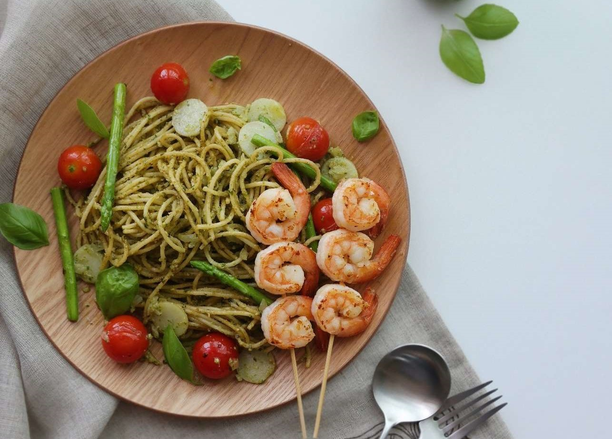
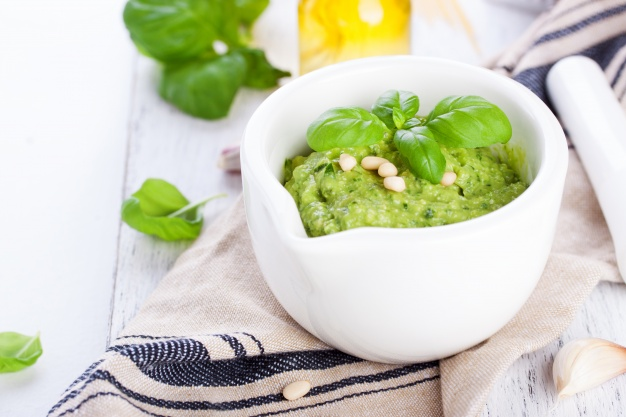

3rd 통새우 바질 파스타
바질은 꿀풀과의 한해살이풀로 전체에 향기와 매운맛이 있어 향신료나 방향제로 쓴며 열대 아시아에 분포하고 재배하기도 한다.
(재료)
바질 60g
파마산 치즈 30g
마늘
익힌 새우
소금
후추
화이트 와인
면
조리법
파스타는 국물이 상대적으로 적기 때문에 불조절이 중요하고 안전에 유념하세요
Step1 바질 페스토 만들기
믹서기에 바질, 파마산치즈, 마늘과 소금과 후추로 간을 하고 갈아준다
Step 2 양념만들기

프라이팬에 올리브오일 1큰술과 화이트와인, 새우를 넣고 볶아준다
Step 3 면 삶기